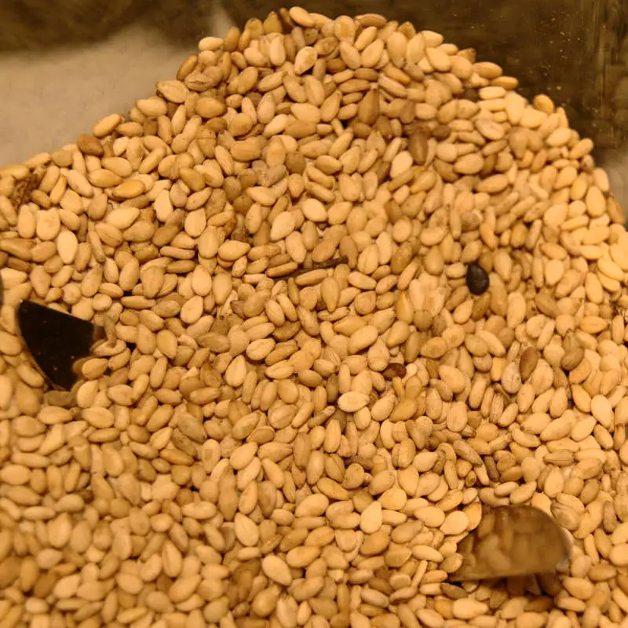
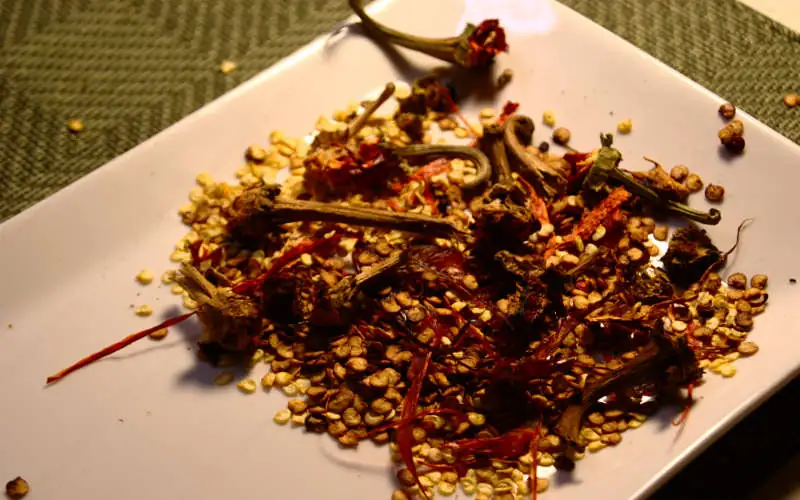
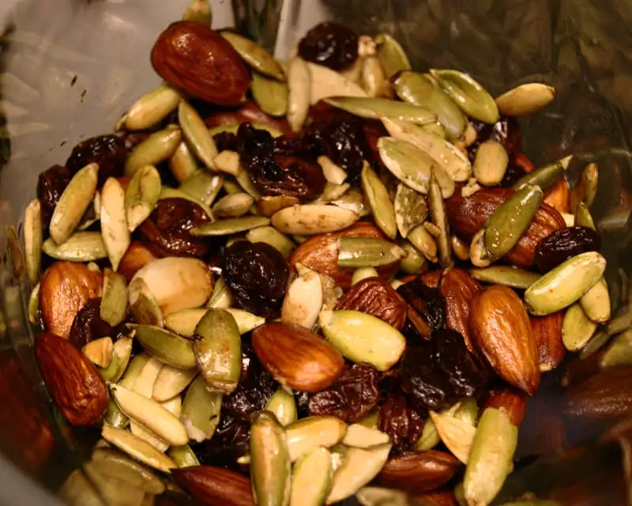
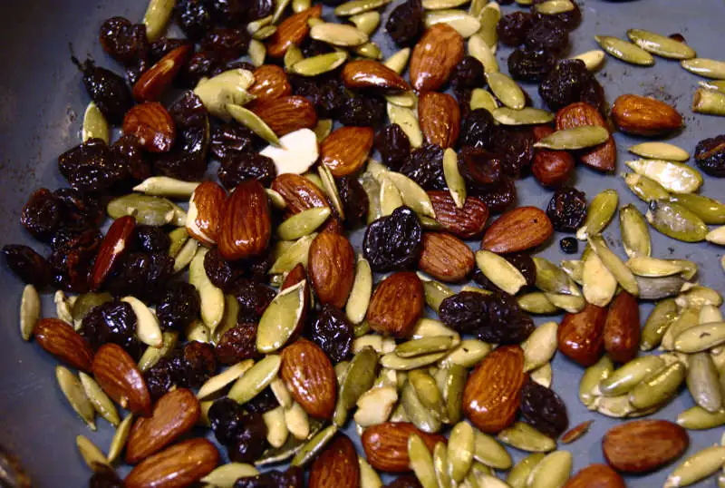
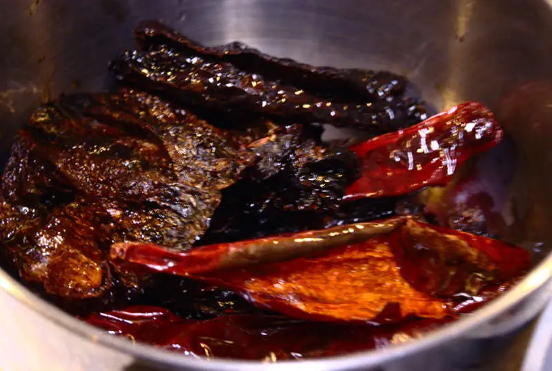

Mole
El ser bajacaliforniano, o al menos a eso le echo la culpa :P, hace que muchas comidas de más allá del Río Colorado sean un poco ajenas en nuestra cocina; si, comeremos de vez en cuando cosas mexicanas, muy mexicanas, tal vez hasta de diario, pero mole? a ver, aguanta.. mole que NO es Doña María? (y no, no me refiero a mi abuelita :P)... ne, eso es mucha chinga para hacer, no? ... pues... no, la verdad no.. Lo curioso, en cambio, es que esta receta está basada en una de food network!! de hecho es igualita excepto por el clavo que no había en la casa al momento de preparalo.
He aquí el mis en place : chiles, chocolate, almendras, pepitas, pasas, ajonjolí y especias.
{kind=link}
Se tuesta el ajonjolí...

{kind=link}
Se desvenan y dessemillan los chiles

{kind=link}
Se fríen los ingredientes

{kind=link}

{kind=link}
Y los chiles

{kind=link}
Después, se licúa todo con caldo de pollo, si quieres lo puedes colar para una textura más sedosa, aunque no es necesario, es bastante, bastante aceptable así medio grumoso; solo que después de licuarlo se debe reducir un poco, agregando el chocolate y ajustando la sal.
Así que... bueno, ya comparado con hacer pasta casera.. salsa de tomate casera... hmm.. tortillas!... naah, el mole es laborioso nomás.